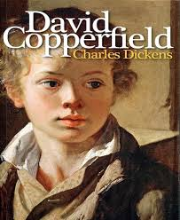

David Copperfeild
Social Commentary
Classic Literature
Historical Fiction
Description
David Copperfield is a semi-autobiographical novel by Charles Dickens that follows the life journey of David, who narrates his story from childhood to adulthood while reflecting on the experiences that shaped his character and values. The story begins with David’s difficult early life, including the loss of family support, harsh treatment, and forced child labor, before tracing his gradual rise through education, relationships, and personal determination. The novel focuses strongly on personal growth, showing how David evolves from an innocent boy into a thoughtful and responsible adult through life lessons, friendships, and hardships.
Book Details
Publisher
Bradbury & Evans
ISBN
978-0-06-231500-7
Publication Date
14 November 1850
File Size
3.2 MB (PDF)
Format
PDF, EPUB